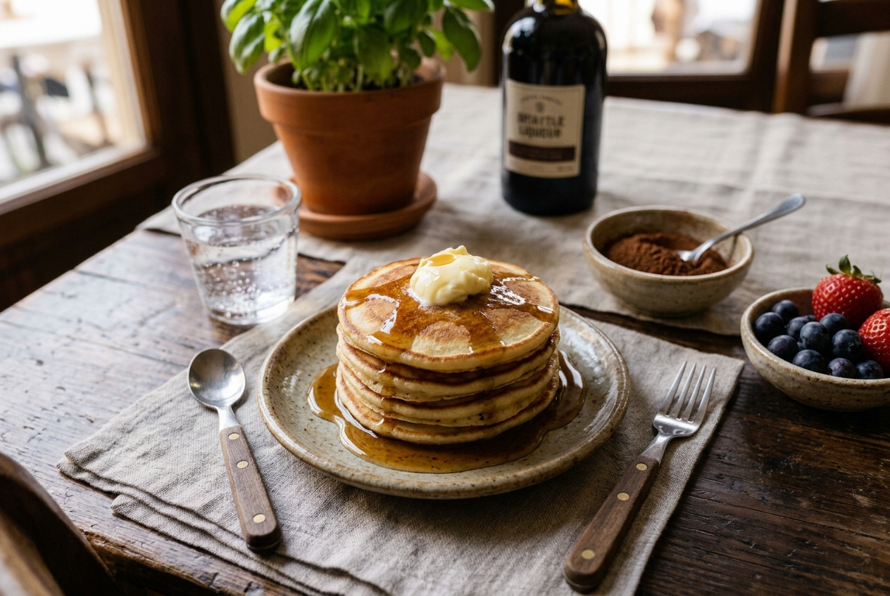
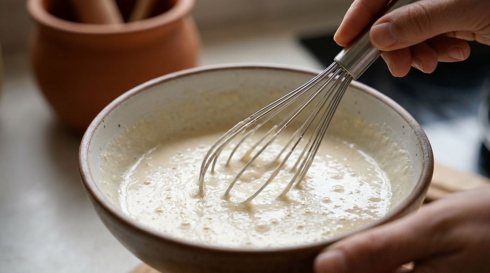
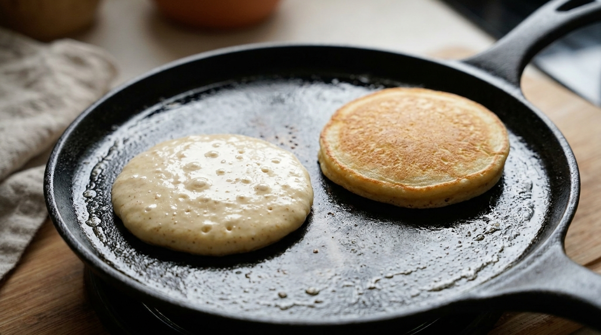
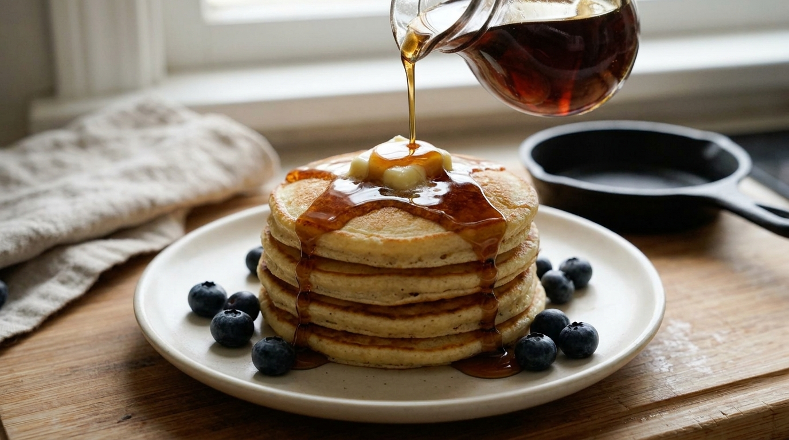

Tortitas Americanas

Las tortitas americanas son el pilar fundamental del desayuno tradicional reconfortante. Aunque parecen una preparación sumamente sencilla debido a la brevedad de sus ingredientes, su verdadero éxito radica en la calidad de las materias primas utilizadas y en el control de la temperatura de la plancha, la cual debe dorar la superficie delicadamente sin perder la ligereza y la esponjosidad interior de la masa
Para conseguir una textura equilibrada y sin exceso de densidad, los cocineros tradicionales recomiendan utilizar harina de trigo fina, leche fermentada o suero de leche (buttermilk) y un toque de levadura química, integrando los ingredientes sin sobrebatir para mantener las burbujas de aire. La cocción debe realizarse a fuego medio, permitiendo que la masa se expanda y cocine gradualmente mientras la superficie muestra pequeñas burbujas antes de darles la vuelta.
Finalmente, el secreto técnico definitivo consiste en servir las tortitas recién hechas directamente con una buena porción de mantequilla que se funda con el calor y un generoso baño de jarabe de arce puro. Este proceso, conocido en la repostería casera como la combinación perfecta, genera una absorción ideal que humedece la torre uniformemente, garantizando un plato jugoso y lleno de sabor tradicional en cada bocado.
El Proceso Paso a Paso



Videoguía Demostrativa
A continuación, puedes visualizar una demostración en vídeo que detalla las técnicas profesionales de manipulación de la pasta y ligación de salsas tradicionales en cocina: